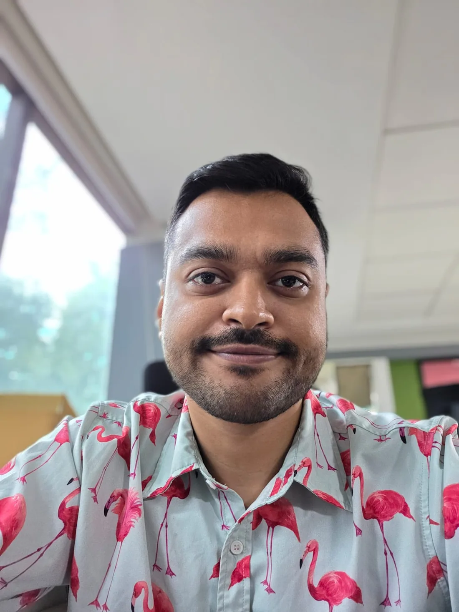

AboutTen years
of making
things land.
Ten years across agencies, radio, health-tech and agri-tech. One constant: find the truth, name it, then build the system that carries it.
I started as an intern at a small agency in 2014, did a year of door-to-door resource mobilising for Plan India, then joined Autumn Worldwide in 2016 as a brand executive and talked my way onto the creative floor.
Since then: agency campaigns for Samsonite, Dell and Diageo; digital at 93.5 Red FM; health content at Clinikk; and now BigHaat, where the audience is two and a half crore farmers and the stakes are a season's income.
What connects it is a bias towards structure. I am less interested in a campaign that wins the week than in the idea that makes the next fifty pieces of content obvious.
What I'm doing now
As Creative Lead for Native Channels at BigHaat, I run brand and content strategy for a platform serving farmers across India: flagship brand platforms, farmer-first campaigns, regional creative, and a national micro-drama creator programme built for rural audiences.

How I work
- 01
Positioning first
Every deliverable should trace back to one sentence about why the brand exists. If it doesn't, it's decoration.
- 02
Platform, not post
I build ideas that can run for years: a tagline system, a proof structure, a content engine. Campaigns end; platforms compound.
- 03
Priming and journey
Behaviour before aesthetics. Message sequence, funnel logic, and the emotional arc from safety to confidence to pride.
- 04
Craft at every touchpoint
The same care on a 90-second film and a 48-pixel app banner. Scale is not an excuse for sloppy.
What I do
Sectors: Agri-tech · Health-tech · Ed-tech · Fintech · Travel & luggage · Alco-bev · Consumer electronics · Media & radio · Retail · Sustainability
Brand & strategy
Content & social
Craft & production
Growth & platform
Not only work.
Photography, climbing, active sports and cooking for more people than the kitchen was built for. Off the clock I am usually halfway through a series, rewatching a film I have already seen twice, or finishing a beat that is almost definitely not finished.
Music is the one habit I refuse to call a hobby. I make playlists constantly and I am always on the hunt for the song that unlocks an idea, and when it lands, another playlist follows within the hour.
That is not a personality quirk, it is a working method. Ask me for the soundtrack to a campaign and you will get one.
On SpotifyFind me on Spotify. Playlists, and whatever I am playing lately.Open ↗Where it started.
Symbiosis Centre for Media & Communication, Pune, advertising. Before that, Indian School Muscat in Oman, which explains the accent and a high tolerance for 45°C.
Everything since has been on the job, which is where most of it sticks. The best training was rewriting other people's copy at 11pm and being told, politely, that it was better the second time.
Hiring, briefing
or just curious?
For creative leadership and associate creative director conversations, brand strategy consulting or campaign collaborations: email is fastest, and I reply to everything that isn't a newsletter.